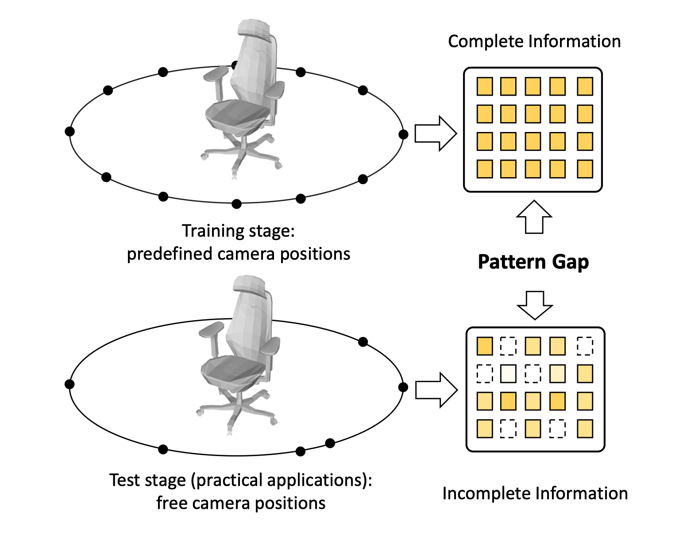
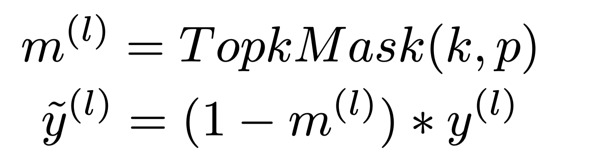
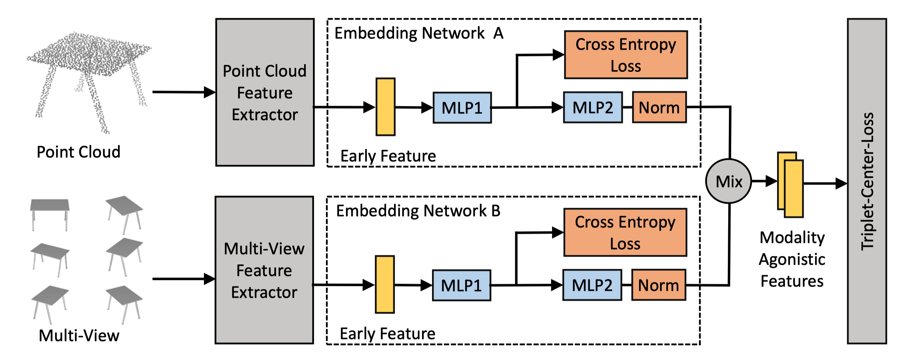
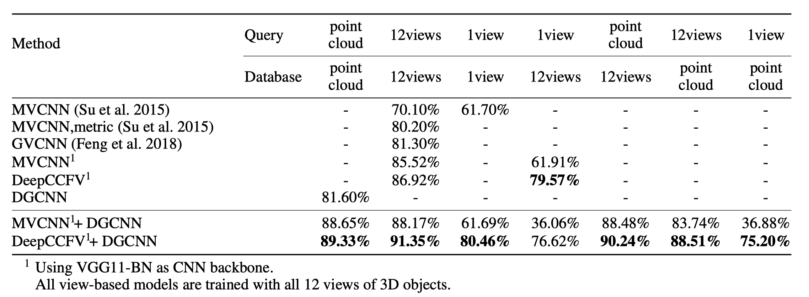

DeepCCFV: Camera Constraint-Free Multi-View Convolutional Neural Network for 3D Object Retrieval
Zhengyue Huang, Zhehui Zhao and Hengguang Zhou
3D object retrieval has a compelling demand in the field of computer vision with the rapid development of 3D vision technology and increasing applications of 3D objects. 3D objects can be described in different ways such as voxel, point cloud, and multi-view. Among them, multi-view based approaches proposed in recent years show promising results. Most of them require a fixed predefined camera position setting which provides a complete and uniform sampling of views for objects in the training stage. However, this causes heavy over-fitting problems which make the models failed to generalize well in free camera setting applications, particularly when insufficient views are provided. Experiments show the performance drastically drops when the number of views reduces, hindering these methods from practical applications. In this paper, we investigate the over-fitting issue and remove the constraint of the camera setting. First, two basic feature augmentation strategies Dropout and Dropview are introduced to solve the over-fitting issue, and a more precise and more efficient method named DropMax is proposed after analyzing the drawback of the basic ones. Then, by reducing the over-fitting issue, a camera constraint-free multi-view convolutional neural network named DeepCCFV is constructed. Extensive experiments on both single-modal and cross-modal cases demonstrate the effectiveness of the proposed method in free camera settings comparing with existing state-of-the-art 3D object retrieval methods.

Figure 1. The pattern gap between training and test stage. This makes the deep models trained in complete dataset hard to generalize well in practical scenarios where the data is missing or incomplete.
Method
A complete training set of views is supposed to make the deep models perform better in practical scenarios where the input views are uncertain. However, we observe that the network may suffer from overfitting issues when trained in a complete training set. This makes the networks perform even worse than that trained in missing view datasets. This unexpected result is mainly caused by the pattern gap between the complete and missing view datasets (Figure 1). To tackle this issue, we can augment the training set by randomly dropping the views (denoted as Dropview). Though easy to apply, this simple strategy is not efficient and precise enough to close the pattern gap. In this way, both the dominated strong features and weak features are dropped and hence the dropped weak feature can not be enhanced. Considering this, we propose a method named DropMax which precisely drops the dominated features in the networks. The formal definition of DropMax is given as follows:

where TopkMask represents a function to generate the topk mask at probability p, l denotes the corresponding layer, y(l) is the original output of layer l, \tilde{y}^{(l)} represents the masked output after DropMax. In a large range, the selection of hyper parameters k and p leads to stable performance.
In MVCNN-like models, DropMax is inserted before and after the aggregation layer (Figure 2).

Figure 2. DeepCCFV architecture, DropMax block is added before and after the aggregation operation (denoted as M is this figure)
The overall pipeline for cross-modal retrieval is shown in Figure 3

Figure 3.The architecture of our cross-modal retrieval network. The input multi-view data and point cloud data is first passed through the feature extractors. Then the extracted features are passed to the embedding networks to generate two features for each modality.
Experimental Results
DropMax makes MVCNN maintain about 90% of the performance when about 90% of the data is missed.

Figure 4. The retrieval mAP of comparing approaches using VGG11-BN and ResNet50 as the CNN backbone in random camera positions. The proposed DeepCCFV had the best performance among the methods listed in the figure. The retrieval mAP of DeepCCFV using single view achieved 74.49% and 78.63%, which were 13.69% and 32.02% higher than MVCNN. The retrieval mAP of the proposed DeepCCFV using 12 views achieved 82.87% and 87.98% ,which were 6.91% and 11.75% higher than MVCNN.

Figure 5. The results of cross-modal retrieval experiment in terms of mAP. Above the middle line, results show the original single-modal retrieval results for different methods. Below the middle line, results show the cross-modal retrieval result. For all cases, the method with DeepCCFV performs the best.
Citation (BibTeX)
title={DeepCCFV: Camera Constraint-Free Multi-View Convolutional Neural Network for 3D Object Retrieval},
author={Zhengyue Huang and Zhehui Zhao and Hengguang Zhou and Xibin Zhao and Yue Gao},
booktitle={AAAI},
year={2019}
}